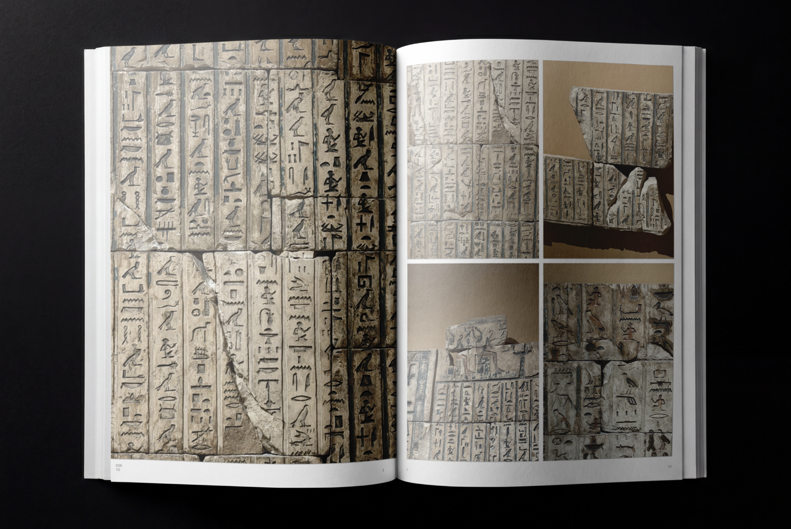
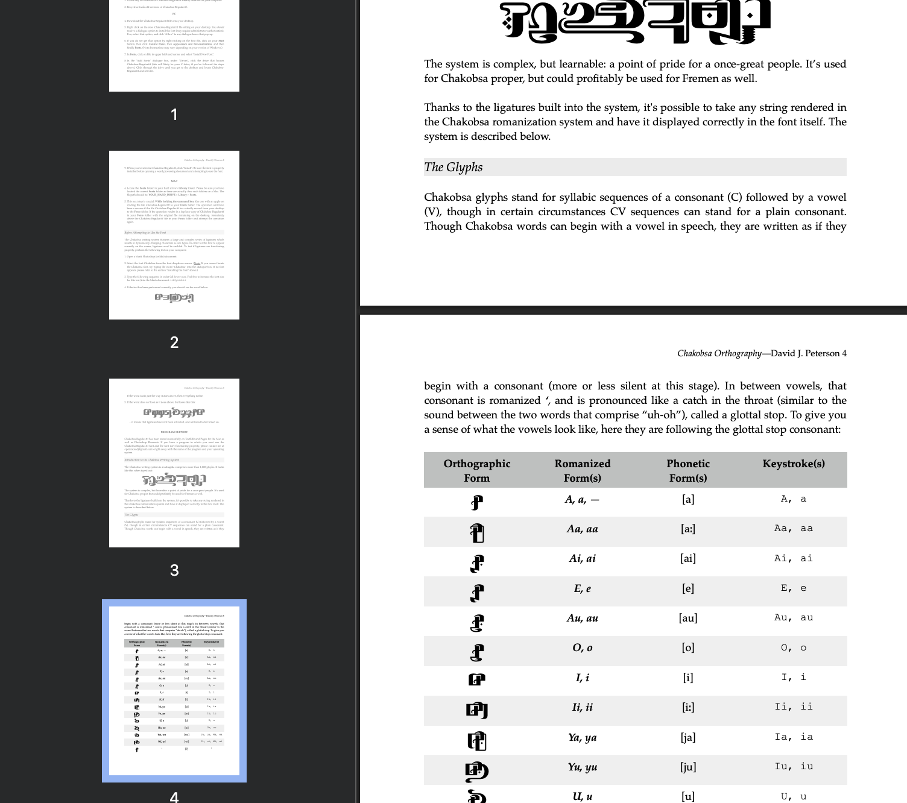
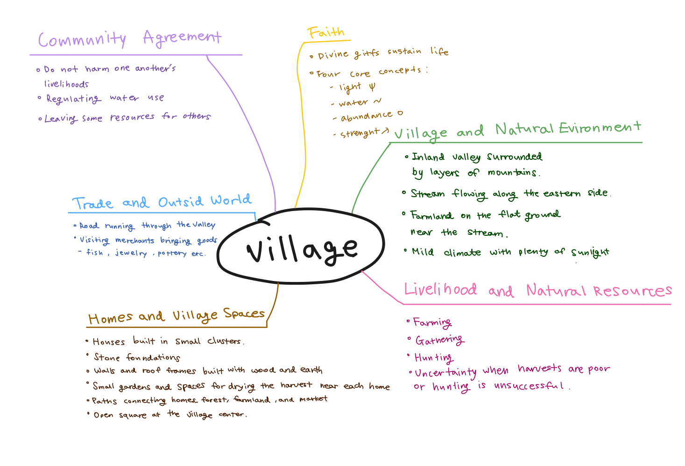
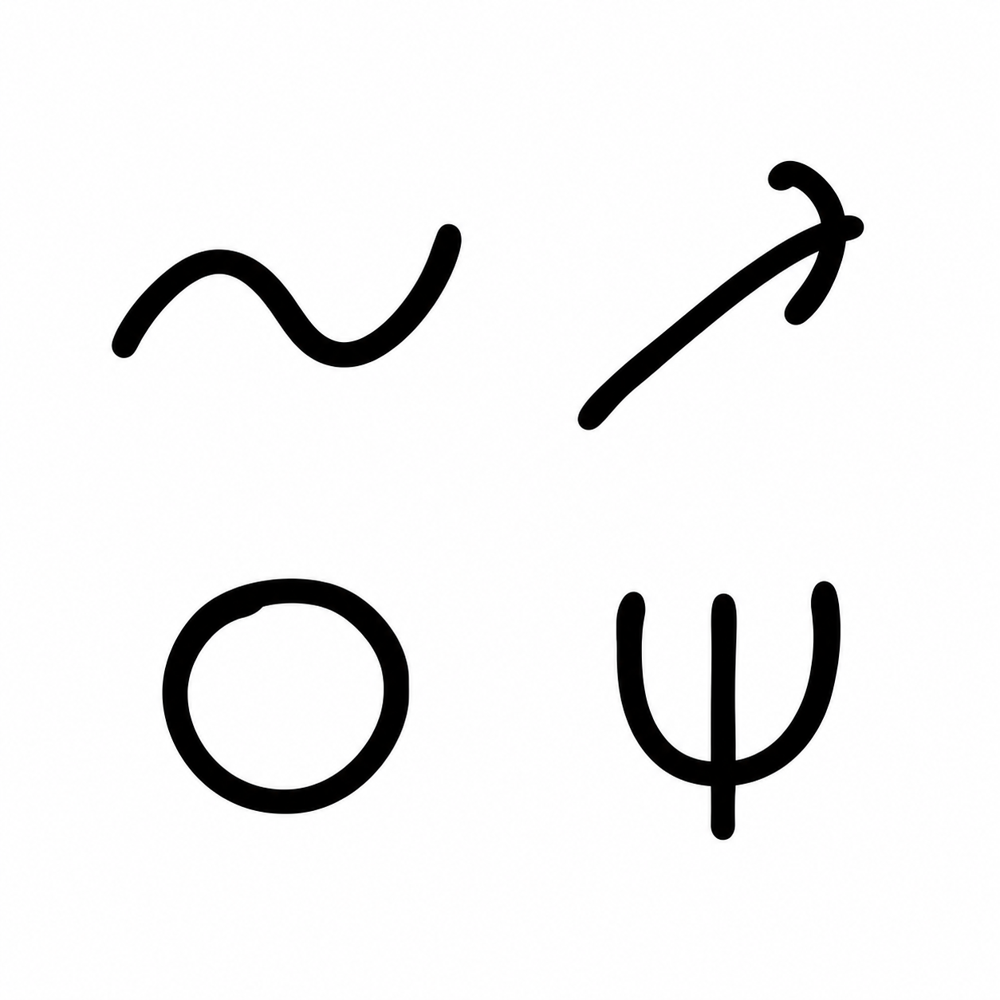
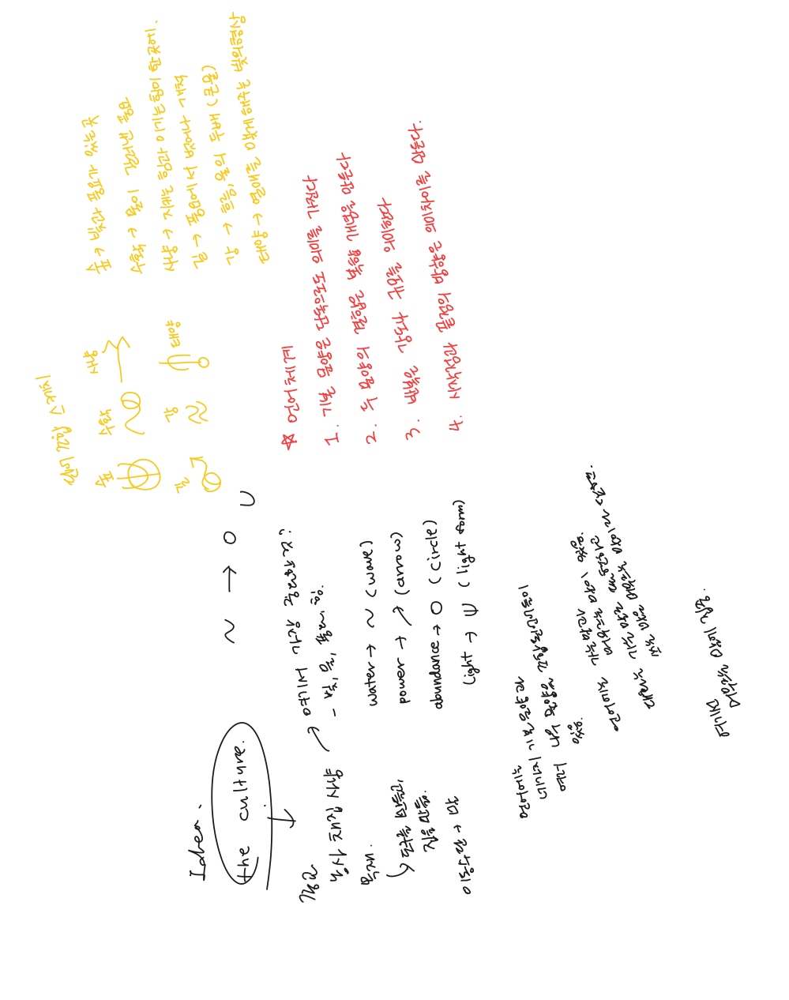
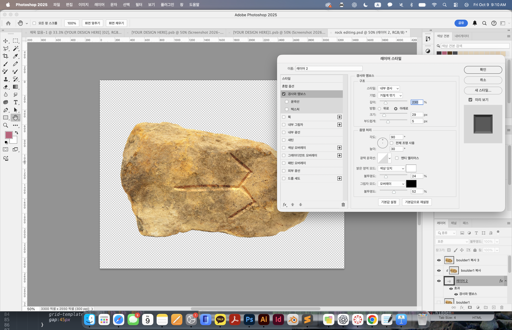

Living Archive / Working guide
About LithoScript
An exhibition of an imagined culture and its symbolic system.
How can an invented language make an imaginary world feel historically real?
Where the project began

256 Project / selected materialImages/research-256.jpg
References & observations

Reference imageImages/research-reference.jpg
Building a symbolic system

Culture mind mapImages/culture-mindmap.jpg

Light / Water / Abundance / StrengthImages/basic-elements.png
Combination rules
Basic symbols carry meaning on their own. Combining symbols creates more complex concepts. Repetition indicates scale, intensity, or multiple purposes depending on the repeated element. Orientation and the direction of a form shape its meaning.

Word combination sketchesImages/word-sketches.jpg
From drawing to exhibition

Applying the symbol to stoneImages/process-stone.jpg
 Tag card iteration
Tag card iterationImages/tag card 1.png
Feedback & next steps
 Website iteration
Website iterationImages/website-iteration.jpg